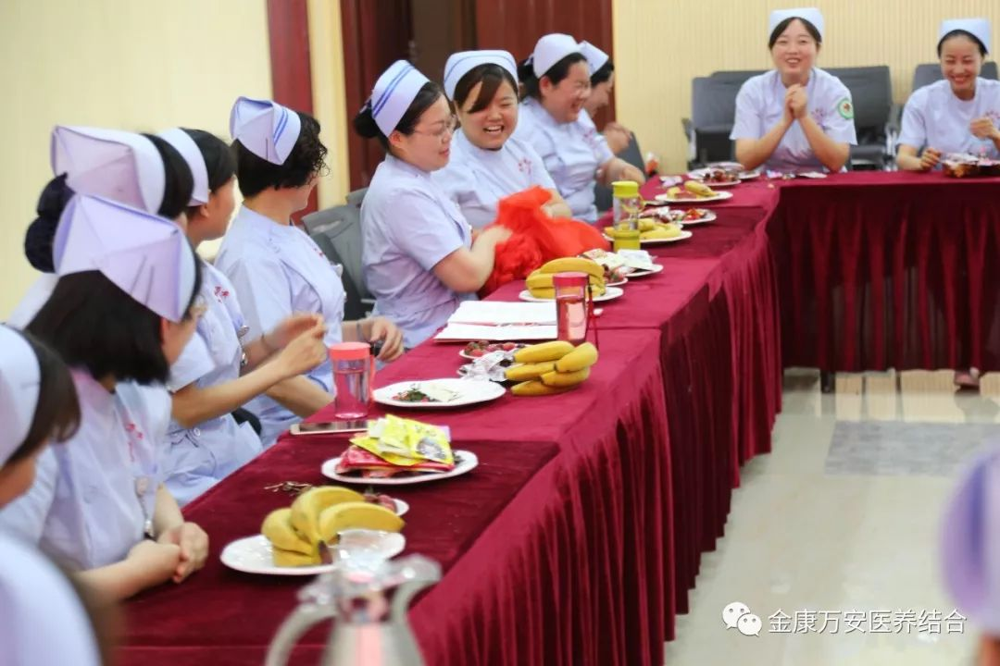

万安医院新闻
漯河万安医院举办庆祝5-12护士节活动圆满成功
人气: "" 时间：2018-05-11
为弘扬南丁格尔精神，提升优质护理服务水平，激发全院护理工作者“救死扶伤、爱岗敬业、无私奉献”的职业精神，展示白衣天使风采。 在“5.12”国际护士节来临之际，漯河万安医院于5月11日下午在四楼会议室隆重举行庆祝“5.12”国际护士节系列活动。院领导班子成员、护士长、护理骨干等30余人参加了此次活动。
会上，院长王卫峰代表医院领导班子作了热情洋溢的致辞，首先向全院护理人员致以节日的祝福，并高度肯定了全院护士在改善医疗服务、提升医疗质量、保证患者安全等方面发挥的重要作用，肯定了护理职业的崇高与辛劳。同时希望大家继续大力弘扬南丁格尔精神，坚持“患者至上”的服务理念，不断深化优质护理服务，保障患者安全。

在护理学创始人南丁格尔像前，伴随着庄严的乐曲，新进护士半蹲在护理前辈面前，由护理前辈为护士戴上圣洁的燕尾帽，并在南丁格尔像前庄严宣誓。
授帽仪式结束后，院内对上次在由源汇区总工会、新区工会联合会、漯河万安医院共同举办的护理技能竞赛中获奖的十名选手进行了表彰并颁发奖品。
此次活动的圆满举办，不仅活跃了我院员工的文化生活，同时展现出我院拥有一支积极向上、团结拼搏、蓬勃发展的护理队伍。